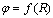

2.6.5. Потенциальная диаграмма
|
Графической иллюстрацией второго закона Кирхгофа является потенциальная диаграмма - график изменения электрического потенциала вдоль контура с резисторами и источниками напряжения, т. е. . Для любого контура схемы цепи получают замкнутую потенциальную диаграмму: начав обход контура с выбранной точки, например, с нулевым потенциалом, должны придти к исходному потенциалу. |